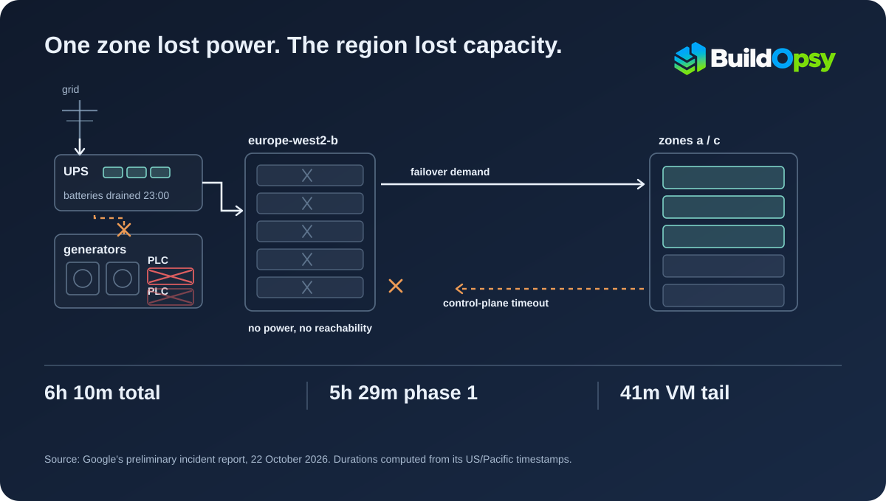

1. What Happened, In Order
A power grid disruption hit the datacenter facility hosting availability zone europe-west2-b. The facility switched to battery backup while it waited for its emergency generators to start, and they did not. Both the primary and the backup programmable logic controllers, the automation that commands the generators to take the load, failed to run that sequence. The batteries carried the load until they were empty, and at 23:00 the physical hosts, the network switching fabric and the local storage arrays in that zone went offline.
Everything hosted only in europe-west2-b became unreachable. Everything regional had to absorb the traffic and the work that the zone had been carrying, and some of that work could not proceed without reaching the zone that had just disappeared. Google's stated impact window is 23:00 to 05:10 Pacific time, 6 hours and 10 minutes, which the report describes as two consecutive phases.
This is a preliminary report, posted on 22 October. Google says a full root cause analysis and a list of preventative actions are still to come, so everything below is the company's provisional account, not a settled finding.
2. Seven Minutes of Battery
The sequence is unusually specific, and the arithmetic is the interesting part. The grid disruption is recorded at 22:53 Pacific time. The transfer to battery power happened automatically. The generators did not start, because the automation that starts them did not run. Customer impact begins at 23:00, the moment the batteries were exhausted. From the grid event to the zone going dark: seven minutes.
A battery bank in a datacenter is a bridge, not a power source. Its job is to hold the load for the seconds a generator takes to spin up and accept it. When the generator fails to start, the battery becomes a countdown, and the standby path it was covering for had two controllers that failed the same way. The report does not say why both controllers failed; it says the full analysis is still running.
That detail matters for anyone who reads "redundant power" as a property of the building. The report gives no timestamp for the generator path coming back. It says engineers restored a stable utility power feed within an hour once supply was available, then reset and tested the generator automation controllers.
3. Two Ways a Zonal Failure Leaves Its Zone
The first coupling is demand. When one zone stops answering, the surviving zones take its traffic. Google's report describes what that looked like: a sudden influx of redirected query executions, high-availability database failovers and compute workloads saturated the available compute slots and processing capacity in the other zones. Admission queues grew, database failovers took longer to complete, and the region returned intermittent 500 and 503 errors.
The second coupling is a control-plane dependency, and it is the one worth taking away. Google's root-cause section describes cross-zone remote procedure calls from regional service control planes to metadata and catalogue components in the offline zone. Its impact section says the same services hit control-plane API timeouts "waiting on validations from the offline zone." Either way, the dependency is the same shape: a regional operation could not complete without a component that had no power.

Put together, the two couplings explain the sentence that surprises people in these reports: customers in the unaffected zones were affected too. Their power was fine, their racks were fine, and they still lost capacity to neighbours' failover and lost progress to a validation call that needed a building with no electricity.
4. The Arithmetic Behind Six Hours
The single headline number hides two different recoveries. The report separates an initial phase, from 23:00 to 04:29 Pacific time, when most services came back, from a tail in which Compute Engine instances took longer. Phase one is 5 hours 29 minutes, or 329 minutes. The remaining 41 minutes bring the total to 370, which is the 6 hours 10 minutes Google states.
| US/Pacific, 19–20 Oct | What changed | Elapsed |
|---|---|---|
| 22:53 | Power grid disruption; generator start sequence fails | Start of facility event |
| 23:00 | Batteries exhausted; zone b hosts, network and storage offline | +7 min |
| 23:08 | Automated monitoring and probers alert engineers | +8 min from impact |
| 04:29 | Most Google Cloud services recovered | 5 h 29 m phase one |
| 04:46 | New virtual machine creation resumes | 17 min into the tail |
| 05:10 | Over 99% of Compute Engine VMs healthy; stated end | 6 h 10 m total |
| 07:03 | Closure notification posted | 1 h 53 m after stated end |
The 99% figure is a threshold, not a finish line. The report says customers still experiencing virtual machine problems after 05:10 were directed to open a support case, which means the stated end time is a service-level boundary, and some individual workloads crossed it. Anyone quoting "six hours" as the duration of their own outage is quoting the region's number, not necessarily their own.
The four milestones in that table are not states of the same thing, and the difference matters if you are trying to map them onto your own recovery plan. "Most Google Cloud services recovered" is the platform answering API calls again. "New virtual machine creation resumed" is one control-plane operation returning, at 04:46. "Over 99% of Compute Engine VMs healthy" is the state of running instances, which says nothing about the work those instances were doing when they lost power. Individual workload recovery after 05:10 has no timestamp at all, because the report hands that tail to customer support. None of these milestones establishes when a particular customer's application recovered; they measure the platform, one control-plane operation, and the health of running instances.
5. Detection, Disclosure, and the Gap Between Them
Automated monitoring caught the failure at 23:08, eight minutes after impact and fifteen after the grid event. The public record moved more slowly. The earliest update listed on the incident page is timestamped 01:35 Pacific time, two hours and 35 minutes after the stated start, and it described the team as still investigating. The status-page history may omit console-level notices that went out earlier, so this is a gap in the published record rather than proof that nobody said anything; the report itself does not reconcile the two.
There is a second inconsistency worth noting because it bears on how the service list should be read. The incident page carries two versions of that list. The summary at the top names 38 services; the detailed list in the preliminary report names 40. They are not the same set: Storage Transfer Service appears only in the summary, while Dialogflow CX, Google SecOps and Looker Studio appear only in the detail. Looker Studio has its own trail, since an update at 04:00 said it was not impacted. None of this suggests the underlying analysis is wrong. It does mean the published scope of impact is itself provisional, and that anyone counting affected services should say which list they counted. This piece counts the report's list.
These are not scandals. They are the normal cost of publishing an incident while it is still being understood, and they are the reason the timeline above is built from the report's own timestamps rather than from the updates as they appeared.
6. What a Zone Boundary Is Actually Worth
The purpose of splitting a region into zones is that one building's bad morning stays one building's problem. That held for hardware here and failed for two softer things, and the report gives enough detail to see where the boundary was thin.
Routing is not recovery. Google's first remediation step was traffic isolation: adjusting regional service routing away from the affected zone so that cross-zone client requests stopped timing out against offline endpoints. The second was workload reprioritisation, which changed scheduler allocations and capacity limits to protect active reservations and drain queue backlogs. Those are different operations with different completion criteria. Routing changes where new requests go; it cannot return the jobs that were already interrupted, and it does not add a single core of capacity. A runbook that treats "traffic shifted" as "recovered" will close the incident while the queue is still growing.
Capacity is not reserved for failover. The report's own numbers stop at "saturated", and the shape of the constraint is easier to see with invented ones. Take two surviving zones with 100 units of usable capacity each, normally running at 60. The failed zone was carrying 60 of its own, and failover sends all of it to the survivors: 120 units of demand against 100 units of capacity, in each zone. The excess is not slower throughput, it is a queue, and it grows until demand falls or capacity appears. That is arithmetic on a hypothetical, not Google's telemetry; the company published no utilisation figures. The measurements that show whether your own fleet is exposed are peak utilisation per zone, the demand one zone's loss would add, how fast the admission queue grows while that demand arrives, and how long the queue takes to drain once capacity is back.
The dependency crosses the boundary. A control plane that must read metadata from every zone is not isolated from any of them. Google's report names components in the offline zone and control-plane timeouts waiting on validations from it, and does not say whether that path was avoidable. The questions it leaves open are the ones worth testing in your own system: whether those calls carry deadlines short enough that a dead dependency fails fast instead of holding worker slots, whether retries against an unavailable zone amplify load on the survivors, and whether a degraded mode exists that can make progress without the missing component. None of that is answered by the report, and none of it is a confirmed cause of this incident.
These are readings of one incident, not a general theory of cloud reliability. The report does not say whether the capacity assumptions were explicit, whether the cross-zone dependency was known, or what changes are planned. Those answers are what the final report should contain.
7. Where the Record Stops
Google discloses the mechanism, the timestamps, the affected service list and the remediation steps, and withholds the scale. There are no customer counts, no per-service error rates, no revenue figure and no statement of how many workloads were still broken after 05:10. The report also does not say what percentage of regional capacity the surviving zones were carrying before the event, which is the number that would make the saturation predictable rather than surprising.
8. The Verdict
The failure starts in the least glamorous layer and ends in the most abstract one: a generator that did not start, and six hours later an API call that could not reach a metadata service in a building with no electricity.
The disclosure is good on sequence and thin on quantities, which is the normal shape for a preliminary report and the reason the arithmetic here is limited to subtraction. When the final analysis lands, the questions to check are specific: how the generator automation failed on both paths, how much headroom the surviving zones actually had, and whether the control plane still needs to call across a zone boundary during a zonal outage.
In this incident the zone boundary held for hardware, and leaked through capacity and control-plane calls.
The downtime cost calculator prices a window like this against your own revenue and SLA credits, if you want to size the exposure rather than the mechanism. The failure domains lesson in the cloud networking course covers why a zone boundary is drawn where it is, and GCP's us-central1 fiber isolation is the earlier case where the failure came from the network rather than the power chain.
Sources and Method
Every timestamp, the service list, the power sequence, the coupling mechanisms and the remediation steps come from Google Cloud's service health incident page for the europe-west2 disruption, including the preliminary incident report posted on 22 October 2026. The report is explicitly preliminary; a final root cause analysis with preventative actions had not been published at the time of writing. The 6 h 10 m, 5 h 29 m and 41 m figures are Buildopsy arithmetic on the report's own US/Pacific timestamps (23:00 to 05:10, 23:00 to 04:29, and 04:29 to 05:10). The 2 h 35 m gap is computed from the stated 23:00 start to the earliest update listed on the incident page at 01:35, which is a gap in the published record and not proof that no earlier notification existed. The count of affected services is a count of the bullets in the report's own list; the incident page's summary names 38 services, and the difference between the two published lists is described in the text. The schematic is illustrative: it shows the reported power path and the two reported couplings, not the actual datacenter layout or equipment.